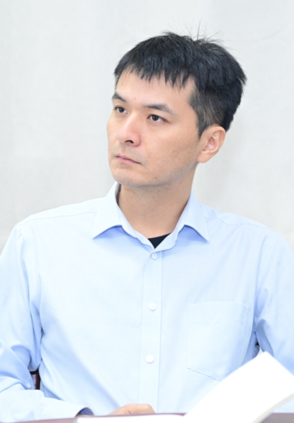

Welcome!
I am Keqing Liu, an associate professor at Wang Yanan Institute for Studies in Economics (WISE) and School of Economics (SOE), Xiamen University (XMU).
My research interest is in macroeconomics, banking, and credit cycles.
My email address: keqingliu[AT]xmu.edu.cn